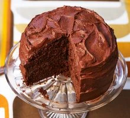

Easy Chocolate Fudge Cake

Need a guaranteed crowd-pleasing cake that's easy to make? This super-squidgy chocolate fudge cake
with smooth icing is an instant baking win.
Ingridients:
- 150ml sunflower oil, plus extra for the tin.
- 175g self-raising flour.
- 2 tbsp cocoa powder.
- 1 tsp bicarbonate of soda.
- 150g caster sugar.
- 2 tbsp golden syrup.
- 2 large eggs, lightly beaten.
- 150ml semi-skimmed milk.
For the icing.
- 100g unsalted butter.
- 225g icing sugar.
- 40g cocoa powder.
- 2½ tbsp milk (a little more if needed).
Steps:
- Heat the oven to 180C/160C fan/gas 4.
- Oil and line the base of two 18cm sandwich tins.
- Sieve the flour, cocoa powder and bicarbonate of soda into a bowl.
- Sieve the flour, cocoa powder and bicarbonate of soda into a bowl.
- Make a well in the centre and add the golden syrup, eggs, sunflower oil and milk.
- Beat well with an electric whisk until smooth.
- Pour the mixture into the two tins and bake for 25-30 mins until risen and firm to the touch.
- Remove from oven, leave to cool for 10 mins before turning out onto a cooling rack.
- To make the icing, beat the unsalted butter in a bowl until soft.
- Gradually sieve and beat in the icing sugar and cocoa powder, then add enough of the milk to make the icing
fluffy and spreadable.
- Sandwich the two cakes together with the butter icing and cover the sides and the top of the cake with more
icing.